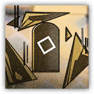

假想敌：黑云 Hypothetical Enemy: Black Cloud
远程 物理；精英 构装（源石造物）

|
 |
假想敌。参照源石尘降前出现的天灾云而设计的假想敌。我们曾在罗德岛本舰与这样的敌人交战。 黑云。天灾是文明长久的敌人，天灾云之下的源石聚合体是死亡的象征。必须在模拟的战斗中找到应对天灾的更多方法。 |
黑云丨The Black Cloud
中型构装（源石造物），无阵营
| AC 13 | 先攻 +3 (13) |
| HP 150 (20d8+60) | |
| 速度 0 尺，飞行20尺（悬浮） | |
| 调整 | 豁免 | 调整 | 豁免 | 调整 | 豁免 | |||||||||
|---|---|---|---|---|---|---|---|---|---|---|---|---|---|---|
| 力量 | 6 | -2 | +1 | 敏捷 | 16 | +3 | +6 | 体质 | 16 | +3 | +6 | |||
| 智力 | 10 | +0 | +3 | 感知 | 12 | +1 | +4 | 魅力 | 8 | -1 | +2 |
| 免疫 挥砍；中毒，目盲，耳聋，恐慌，魅惑，麻痹，力竭，倒地，束缚，受擒，昏迷 |
| 感官 盲视60尺，黑暗视觉120尺，被动察觉11 |
| 语言 无 |
| CR 6（XP 2,300；PB+3） |
特质 Traits
悬浮飞掠 Hovering Flight。黑云不会因移动引发借机攻击。
弹药储备 Ammunition Reserve。黑云最多可以储备5发弹药，初始拥有3发弹药。如果黑云有储备的弹药，可以在攻击命中时进行全弹发射：消耗全部弹药，每发消耗的弹药使得攻击额外造成11（2d10）力场伤害。
动作 Actions
多重攻击 Multiattack。黑云发动两次源石碎片攻击。
源石碎片 Oripathy Fragment。远程攻击检定：+6（若有弹药储备则有优势），射程60/120尺。命中：14（2d10+3）穿刺伤害。
附赠动作 Bonus Actions
抓取无人机 Drone Capture。黑云尝试抓取在其周围30尺内生命值总和不超过100的无人机生物。敏捷豁免检定：DC13，每个被黑云抓取的生物。失败：目标被黑云束缚。在黑云的回合开始时，它会杀死并吞噬所有被以此束缚的目标，每吞噬一个目标获得1发弹药，并恢复10点生命值。